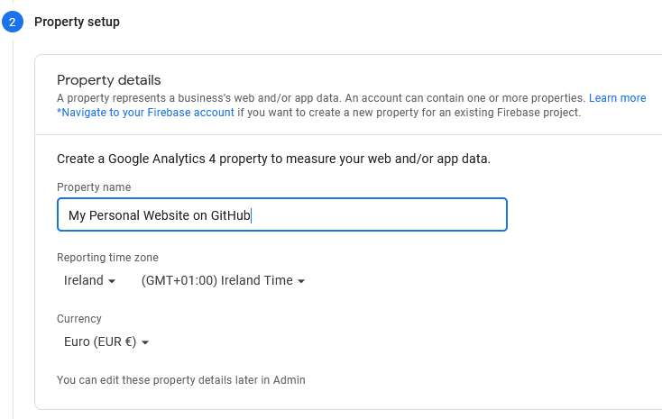
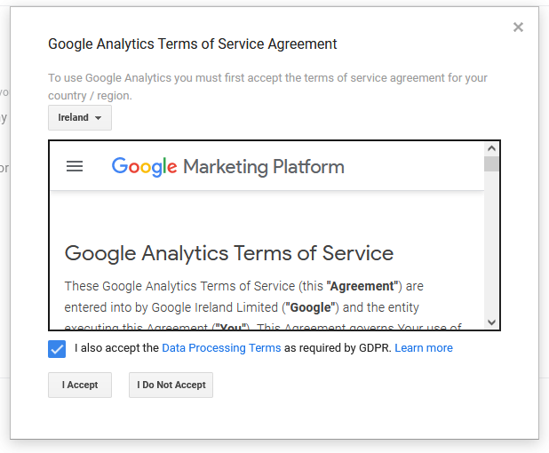
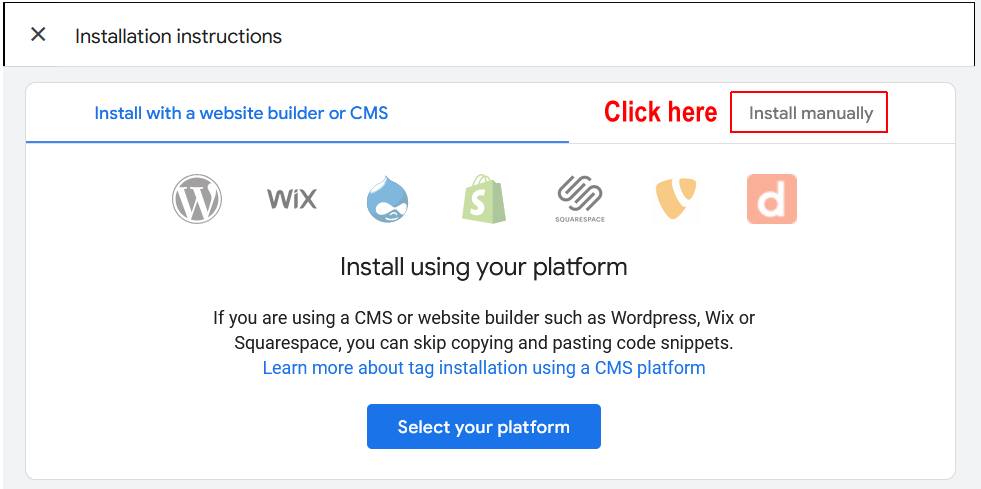
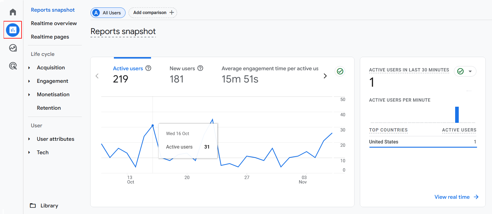
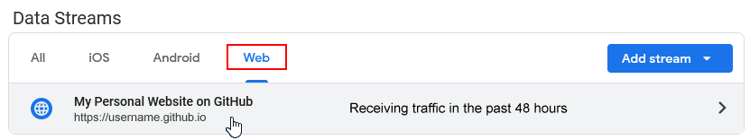
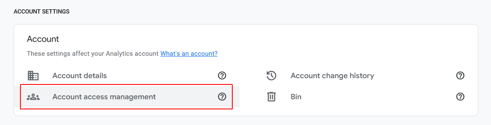

Learning Goals
At the end of this Tutorial you will be able to:
- Sign up to the free Google Analytics service.
- Create the Google Analytics Tracking Code for a particular website.
- Copy-and-paste the Tracking Code into a web page or pages.
- Test that Google Analytics is tracking visits to a web page.
- View a Tracking Code you created previously in Google Analytics.
- Understand these Google Analytics terms: Account, Property and View.
- Share Google Analytics web traffic data with others, such as your work colleagues and clients.
About Google Analytics
Google Analytics is an online service used by some 30 million websites around the world to monitor their user traffic.
You will need a Gmail or other Google Account to complete this Tutorial.
Signing up to Google Analytics
Follow the steps below to sign up as a user of Google Analytics.
- Use your web browser to go to this address:
https://developers.google.com/analytics
At the top-right of the screen, click the Go to Analytics button.

- If you are not currently signed into Gmail or other Google Account in your web browser, you are next asked to sign in to Google Analytics.
- First, type your Email address and click the Next button.
- And then enter your Password and click Next again.

- On the next screen displayed, click the Start measuring button.

Creating a tracking ‘account’
After you have completed the sign-up steps, Google Analytics displays a screen named Account setup.

The word account in Google Analytics means the name of the business customer who operates the website you want to track. For example, 'Joe's Pizzas', 'ABC Limited' or whatever.
When setting up Google Analytics for your own personal website, you are the customer.
Enter 'My Personal Websites' or similar in the Account name box provided.

Next, check as many of the Data Sharing options further down this screen as you require.
When finished, click the Next button.
Creating a tracking ‘property’
Any one Google Analytics account (that is, a customer) can contain up to 100 properties. Each property refers to a single tracked website (or mobile phone app).
On the Property setup screen, enter 'My Personal Website on GitHub' or similar.
Next, select your required timezone and currency.
When finished, click the Next button at the bottom of the screen.
Entering your business information
On the Business information screen, complete the online survey with appropriate details about the purpose of your website.
When finished, click the Create button at the bottom of the screen.
Accepting the Terms of Service
You are now shown a pop-up window inviting you to accept the Google Analytics Terms of Service. You must also, at the top of the window, select your Country.
Click the I accept button to continue.
Selecting your platform
You can use Google Analytics to track either a website or a mobile phone app.

On the next screen displayed, select the Web option to continue.
Creating your data stream
Your next task is to set up a data stream for the property (website or mobile app) you want to track for the account (customer).
Each Google Analytics property can have up to 50 data streams. Each stream is a flow of data from a website (or mobile app) to Google Analytics.
You need to enter the following two items:
- Website URL: Correctly enter the exact web address of the website you want to track (such as marysmith.github.io).
- Stream name: Typically, you will enter the Google Analytics property name here.
When finished, click the Create stream button at the bottom of the screen.
Creating the web stream
A new Web stream details ‘flyout’ window now slides out from the right of your browser screen.
- Scroll down to the end of this screen.

- At the end of this screen, click the View Tag Instructions option.

Viewing and copying your Tracking ID
An Installation instructions ‘flyout’ window now slides out from the right of your browser screen.
- Click the Install manually tab. 
- Google Analytics now displays the JavaScript code that contains your unique Tracking ID.
Click the Copy icon at the right to copy this JavaScript code.
 You can now paste this JavaScript code into whatever web page(s) on your website you want to track.
You can now paste this JavaScript code into whatever web page(s) on your website you want to track. - After you have copied your Tracking ID, close the Installation instructions flyout window.

- Next, close the Web stream details window.

- Your Data streams screen shown look like that below.

You can now close the Google Analytics tab in your web browser.
Pasting your Tracking ID into a web page
You will need to paste the Tracking ID from Google Analytics into every web page on your website you want to track.
- In VS Code, open the web page into which you want to paste the Tracking Code.
- Paste in the Tracking Code to just before the closing </head> tag.

- Save your web page(s) and upload them to your Github account.
Google Analytics cannot track web pages that exist only on your local computer.
Testing your web page(s) are being tracked
Follow these steps to verify that the Google Analytics is tracking a particular web page.
- In one tab of your web browser, display and reload the web page into which you have pasted the Tracking Code from Google Analytics.
- In another browser tab, sign in to Google Analytics. Your Home screen should look similar to the following.

Viewing reports in Google Analytics
After 48 hours, the free version of Google Analytics will give access to more detailed information.
To view various reports, click the Reports icon at the left of the Home screen.
Viewing your Google Analytics Tracking ID
Follow these steps to view a Google Tracking Code you created previously.
- In your Google Analytics home screen, click the Admin menu option at the lower left.

- On the next screen, in the Data collection and modification section, click the Data Streams option.

- On the next screen, click the Web option and then click the name of the Data Stream. 
- At the bottom of the next screen, click View tag instructions.

- On the flyout screen, click the Install manually tab.
- On the new flyout screen, you can view and copy your Tracking ID.
You now close the two flyout windows and return to the Home screen of Google Analytics.
Sharing Google Analytics data with others
As a front-end developer, you will often be the person who creates the Google Analytics Tracking Code for the websites you build. However, others will want to be able to view the web traffic information collected by Google Analytics. For example:
- Team colleagues in the marketing and IT departments of your organisation.
- External clients for whom you built websites.
Follow these steps to share Google Analytics data with one or more other people.
- Sign in to Google Analytics and, on your home screen, click the Admin menu option at the lower-left.
- On the next screen displayed, in the Account section, click the Account Access Management option. 
- On the next screen displayed, click the blue plus (+) icon at the top-right, and then select Add users.

- Enter the email address(es) of the people you want to share web traffic data with.
- Select the level of access you want to grant to others. This can include the ability for them to add further users.

- When finished, click the Add button at the top-right of the screen.
You can also use this Account Access Management option on the Admin screen to remove Google Analytics sharing access from existing users or to vary their current access level.
Further resources
Get to Know Google Analytics 4: A Complete Guide
By Kayle Larkin at Search Engine Journal
Walkthrough of the Google Analytics 4 User Interface
From Google Analytics on YouTube.
Google Analytics 4 Tutorial – How to get started quickly with GA4
From Loves Data on YouTube.
Google Analytics for Beginners (free online course)
From Official Google Analytics Academy